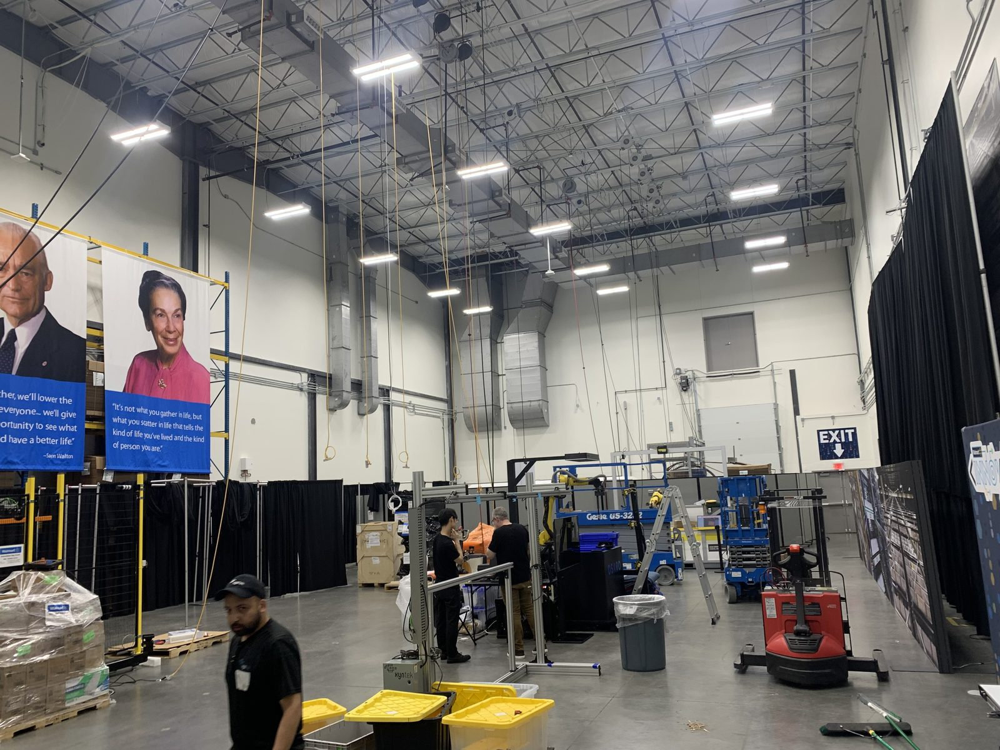

Flagship Innovation Event
Walmart Innovation Day
- Challenge
- Launch Walmart’s first-ever Innovation Day with no existing playbook — convening executives, startups, and partners under one roof.
- Approach
- Built the event strategy, executive engagement plan, startup programming, and full operational framework from the ground up.
- Results
- 400 attendees, 5 executives, and 20 participating startups — later expanded into a recurring flagship event, growing partner engagement by 30%.
400 attendees
20 startups
+30% engagement